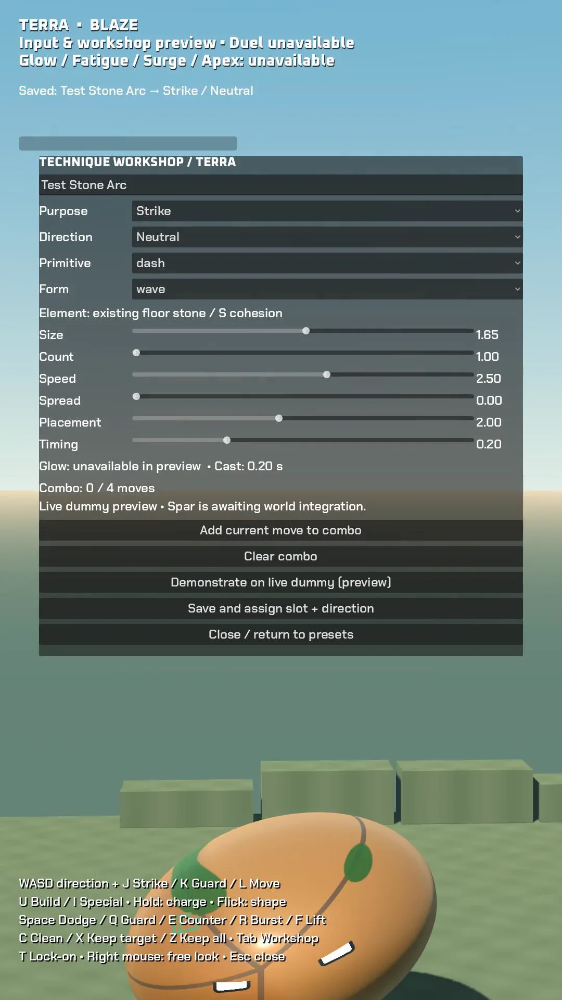

Testing the controls before the duel
The first control prototype now runs inside Godot. A recorded input session exercises direction and charge, releasing a technique, quick reactions, lock-on, Clean and Keep requests, and the technique workshop. Thirteen checks passed for input handling and saved recipes.
That evidence covers the control path. The fighter simulation still needs to supply real combat outcomes, building state and AI decisions. Until it does, the prototype rejects those actions rather than displaying invented results. A playable duel has not been released.
The first captured session also exposed presentation problems: the floor was too bright, the starting view clipped subjects, and some control text was faint. These are being corrected before another capture and hands-on play review.
The reference fight remains the first milestone to finish. Its newest render still needs clearer contact staging and the brighter world direction. The gallery stays empty while those films are below the visual bar.
Inside the work

